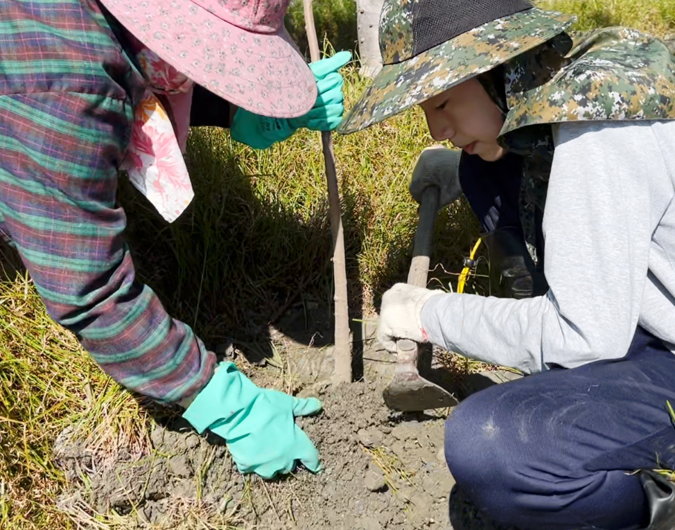
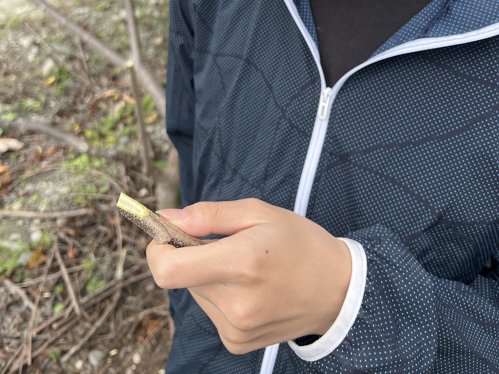

補苗與嫁接完整紀實
實作流程說明
- 第一步：購買好苗 - 嚴格挑選健康強壯的果苗，確保果園的優良根基。
- 第二步：挖洞 - 在田間合適位置挖掘深度適當的植樹坑。
- 第三步：種樹苗 - 將樹苗端正放入坑中，覆土壓實讓根系穩固。
- 第四步：剪去實生枝 - 將多餘或不符預期的實生枝條剪除，準備作為嫁接砧木。
- 第五步：選穗 - 挑選生長良好、芽眼飽滿的優良接穗。
- 第六步：切接 - 精準切開砧木與削好接穗，完美對齊形成層。
- 第七步：纏繞石蠟膜 - 緊密纏繞石蠟膜以固定接穗，並達到絕佳保濕效果。
- 第八步：套袋 - 外部套上防護紙袋，防曬防蟲害，等待新芽萌發。

1購買好苗

2挖洞

3種樹苗

4剪去實生枝

5選穗

6切接

7纏繞石蠟膜

8套袋